토목산업기사 (2014-09-20 기출문제)
1과목: 응용역학
1. 다음 중 힘의 3요소가 아닌 것은?
- 크기
- 방향
- 작용점
- 모멘트
(정답률: 86%)

2. 그림과 같은 내민보의 자유단 A점에서의 처짐 δA는 얼마인가? (단, EI 는 일정하다.)
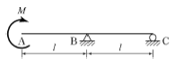
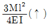
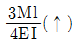
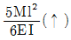
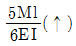
(정답률: 56%)
3. 축방향력만을 받는 부재로 된 구조물은?
- 단순보
- 트러스
- 연속보
- 라멘
(정답률: 77%)
4. 다음 중 부정정구조물의 해법으로 틀린 것은?
- 3연 모멘트정리
- 처짐각법
- 변위일치의 방법
- 모멘트 면적법
(정답률: 60%)
5. 직경 20mm, 길이 2m인 봉에 20t의 인장력을 작용시켰더니 길이가 2.08m, 직경이 19.8mm로 되었다면 포아송비는 얼마인가?
- 0.5
- 2
- 0.25
- 4
(정답률: 75%)
6. 다음 그림과 같이 양단이 고정된 강봉이 상온에서 20℃만큼 온도가 상승했다면 강봉에 작용하는 압축력의 크기는? (단, 강봉의 단면적 A=50cm2, E=2.0×106kg/cm2, 열팽창계수 α=1.0×10-6(1℃에 대해서)이다.)
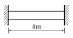
- 10t
- 15t
- 20t
- 25t
(정답률: 73%)
7. 단면적이 10cm2인 강봉이 그림과 같은 힘을 받을때 이 강봉의 늘어난 길이는? (단, E=2.0×106kg/cm2)
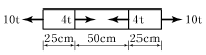
- 0.⑤cm
- 0.04cm
- 0.03cm
- 0.02cm
(정답률: 64%)
8. 아래 그림과 같은 3힌지 라멘의 지점반력 HA는?
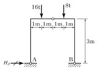
- -4t
- 4t
- -8t
- 8t
(정답률: 60%)
9. 단면이 30cm×30cm인 정사각형 단면의 보에 1.8t의 전단력이 작용할 때 이 단면에 작용하는 최대전단응력은?
- 1.5kg/cm2
- 3.0kg/cm2
- 4.5kg/cm2
- 6.0kg/cm2
(정답률: 77%)
10. 다음과 같은 그림에서 AB부재의 부재력은?
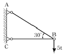
- 4.3t
- 5.0t
- 7.5t
- 10.0t
(정답률: 85%)
11. 단순보에 하중이 작용할 때 다음 설명 중 옳지 않은 것은?
- 등분포하중이 만재될 때 중앙점의 처짐각이 최대가 된다.
- 등분포하중이 만재될 때 최대처짐은 중앙점에서 일어난다.
- 중앙에 집중하중이 작용할 때의 최대처짐은 하중이 작용하는 곳에서 생긴다.
- 중앙에 집중하중이 작용하면 양지점에서의 처짐각이 최대로 된다.
(정답률: 70%)
12. 다음의 2경간 연속보에서 지점 C에서의 수직반력은 얼마인가?
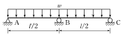
- 3wl/32
- wl/16
- 5wl/32
- 3wl/16
(정답률: 68%)
13. 그림과 같은 단순보에서 최대 휨모멘트가 발생하는 위치는? (단, A점으로부터의 거리 X로 나타낸다.)(오류 신고가 접수된 문제입니다. 반드시 정답과 해설을 확인하시기 바랍니다.)
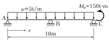
- 6m
- 7m
- 8m
- 9m
(정답률: 64%)
14. 그림과 같은 라멘에서 A점의 휨모멘트 반력은?
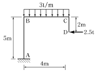
- -9.5tㆍm
- -12.5tㆍm
- -14.5tㆍm
- -16.5tㆍm
(정답률: 61%)
15. 그림과 같은 캔틸레버보에서 B점의 처짐은? (단, MC 는 C점에 작용하며, 휨강성계수는 EI이다.)
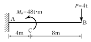
- 384t⋅m3/EI
- 724t⋅m3/EI
- 1024t⋅m3/EI
- 1428t⋅m3/EI
(정답률: 55%)
16. 그림과 같이 2차 포물선 OAB가 이루는 면적의 y축으로부터 도심 위치는?
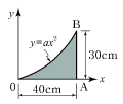
- 30cm
- 31cm
- 32cm
- 33cm
(정답률: 60%)
17. 장주의 좌굴하중(P)을 나타내는 아래의 식에서 양단고정인 장주인 경우 n값으로 옳은 것은? (단, E : 탄성계수, A : 단면적, λ : 세장비)
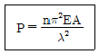
- 4
- 2
- 1
- 1/4
(정답률: 72%)
18. 단면이 원형(지름 D)인 보에 휨모멘트 M 이 작용할 때 이 보에 작용하는 최대 휨응력은?
- 12M/πD3
- 16M/πD3
- 32M/πD3
- 64M/πD3
(정답률: 73%)
19. 단면의 성질에 대한 다음 설명 중 잘못된 것은?
- 단면2차 모멘트의 값은 항상 “0”보다 크다.
- 단면2차 극모멘트의 값은 항상 극을 원점으로 하는 두 직교좌표축에 대한 단면2차 모멘트의 합과 같다.
- 단면1차 모멘트의 값은 항상 “0”보다 크다.
- 단면의 주축에 관한 단면 상승모멘트의 값은 항상 “0”이다.
(정답률: 79%)
20. 반지름이 r인 원형단면의 단주에서 도심에서의 핵거리 e는?
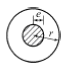
- r/2
- r/4
- r/6
- r/8
(정답률: 88%)
2과목: 측량학
21. 항공기 및 기구 등에 탑재된 측량용 사진기로 연속 촬영된 중복사진을 정성적 및 정량적으로 해석하는 측량방법은?(오류 신고가 접수된 문제입니다. 반드시 정답과 해설을 확인하시기 바랍니다.)
- 원격탐측
- 지상사진측량
- 수중사진측량
- 항공사진측량
(정답률: 74%)
22. 그림과 같은 삼각형의 정점 A, B, C의 좌표가 A(50, 20), B(20, 50), C(70, 70)일 때 정점 A를 지나며 △ABC의 넓이를 m:n=4:3으로 분할하는 P점의 좌표는? (단, 좌표의 단위는 m이다.)
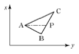
- (58.6, 41.4)
- (41.4, 58.6)
- (50.6, 63.4)
- (50.4, 65.6)
(정답률: 60%)
23. 삼각측량을 통해 삼각망의 내각을 측정하니 각각 다음과 같은 각도를 얻었다면 각 내각의 최확값은? (∠A= 32°13'29", ∠B=55°32'19", ∠C=92°14'30")
- ∠A=32°13'24", ∠B=55°32'12", ∠C=92°14'24"
- ∠A=32°13'23", ∠B=55°32'12", ∠C=92°14'25"
- ∠A=32°13'23", ∠B=55°32'13", ∠C=92°14'24"
- ∠A=32°13'24", ∠B=55°32'13", ∠C=92°14'23"
(정답률: 80%)
24. 축척 1:50000 지형도의 도곽 구성은?
- 경위도 10'차의 경위선에 의하여 구획되는 지역으로 한다.
- 경위도 15'차의 경위선에 의하여 구획되는 지역으로 한다.
- 경도 15', 위도 10'차의 경위선에 의하여 구획되는 지역으로 한다.
- 경도 10', 위도 15'차의 경위선에 의하여 구획되는 지역으로 한다.
(정답률: 72%)
25. 곡선반지름 R=250m, 곡선길이 L=40m인 클로소이드에서 매개변수 A는?
- 20m
- 50m
- 100m
- 120m
(정답률: 82%)
26. 교호수준측량의 결과가 그림과 같을 때 A점의 표고가 55.423m라면 B점의 표고는?(단, a=2.665m, b=3.965m, c=0.530m, d=1.816m)
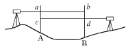
- 52.930m
- 54.130m
- 54.132m
- 54.137m
(정답률: 68%)
27. 양수표의 설치장소로 적합하지 않은 곳은?
- 상∙하류 최소 300m 정도 곡선인 장소
- 교각이나 기타 구조물에 의한 수위변동이 없는 장소
- 홍수시 유실 또는 이동이 없는 장소
- 지천의 합류점에서 상당히 상류에 위치한 장소
(정답률: 72%)
28. 수치영상자료는 대개 8비트로 표현된다. pixel 값의 밝기값(grey level) 범위로 옳은 것은?
- 0~63
- 1~64
- 0~255
- 1~256
(정답률: 73%)
29. 그림과 같은 지역의 면적은?
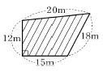
- 246.5m2
- 268.4m2
- 275.2m2
- 288.9m2
(정답률: 75%)
30. 캔트(C)인 원곡선에서 곡선반지름을 3배로 하면 변화된 캔트(C')는?
- C/9
- C/3
- 3C
- 9C
(정답률: 81%)
31. 비행고도가 3,000m이고 사진(Ⅰ)의 주점기선장이74mm, 사진(Ⅱ)의 주점기선장이 76mm일 때, 시차차가 1.8mm인 구조물의 높이는?
- 20.5m
- 34.7m
- 50.4m
- 72.0m
(정답률: 62%)
32. 어떤 측선의 배횡거를 구하는 방법으로 옳은 것은?
- 전 측선의 배횡거+전 측선의 경거+그 측선의 경거
- 전 측선의 횡거+전 측선의 경거+그 측선의 횡거
- 전 측선의 횡거+전 측선의 경거+그 측선의 경거
- 전 측선의 배횡거+전 측선의 경거+그 측선의 횡거
(정답률: 72%)
33. 삼각점에서 행해지는 모든 각관측 및 조정에 대한 설명으로 옳지 않은 것은?
- 한 측점의 둘레에 있는 모든 각을 합한 것은 360°가 되어야 한다.
- 삼각망 중 어느 1변의 길이는 계산순서에 관계없이 동일해야 한다.
- 삼각형 내각의 합은 180°가 되어야 한다.
- 각 관측방법은 단축법을 사용하여 최대한 정확히 한다.
(정답률: 70%)
34. 클로소이드 곡선에 대한 설명으로 옳은 것은?
- 곡선의 반지름 R, 곡선길이 L, 매개변수 A의 사이에는 RL=A2의 관계가 성립한다.
- 곡선의 반지름에 비례하여 곡선길이가 증가하는 곡선이다.
- 곡선길이가 일정할 때 곡선의 반지름이 크면 접선각도 커진다.
- 곡선 반지름과 곡선길이가 같은 점을 동경이라 한다.
(정답률: 76%)
35. 축척 1:10000 지형도 상에서 주곡선 1개 간격의 두 점 A점과 B점 사이에 수평거리 2.0cm인 도로를 설계하려 할 때 도로의 경사는?
- 2.5%
- 5%
- 15%
- 20%
(정답률: 46%)
36. 우리나라에서 현재 사용중인 투영법과 평면 직각좌표에 대한 설명으로 옳은 것은?
- 중앙자오선의 축척계수가 0.9996인 UTM투영이다.
- 중앙자오선의 축척계수가 1.0000인 UTM투영이다.
- 중앙자오선의 축척계수가 0.9996인 TM투영이다.
- 중앙자오선의 축척계수가 1.0000인 TM투영이다.
(정답률: 50%)
37. 수준측량에 대한 설명으로 옳지 않은 것은?
- 측량은 전시로 시작하여 후시로 종료하게 된다.
- 표척을 전후로 기울여 최소읽음값을 관측한다.
- 수준측량은 왕복측량을 원칙으로 한다.
- 이기점(turning point)은 중요하므로 1mm 단위까지 읽도록 한다.
(정답률: 69%)
38. 접선과 현이 이루는 각을 이용하여 곡선을 설치하는 방법으로 정확도가 비교적 높은 단곡선 설치법은?
- 지거설치법
- 중앙종거법
- 편각설치법
- 현편거법
(정답률: 75%)
39. 기선측량을 실시하여 150.1234m를 관측하였다. 기선양단의 평균표고가 350m일 때 표고보정에 의해 계산된 기준면상의 투영거리는? (단, 지구의 곡률반지름 R=6,370km이다.)
- 150.0000m
- 150.1152m
- 150.1234m
- 150.1316m
(정답률: 54%)
40. 트래버스 측량의 특징에 대한 설명으로 옳지 않은 것은?
- 삼각측량에 비하여 복잡한 시가지나 지형의 기복이 심해 시준이 어려운 지역의 측량에 적합하다.
- 도로, 수로, 철도와 같이 폭이 좁고 긴 지역의 측량에 편리하다.
- 국가평면기준점 결정에 이용되는 측량방법이다.
- 거리와 각을 관측하여 모든 점의 위치를 결정하는 측량이다.
(정답률: 75%)
3과목: 수리학
41. 지름이 40cm인 주철관에 동수경사 1/100로 물이 흐를 때 유량은? (단, 조도계수 n=0.013이다.)
- 0.208m3/s
- 0.253m3/s
- 0.184m3/s
- 1.654m3/s
(정답률: 58%)
42. 체적이 10m3인 물체가 물 속에 잠겨있다. 물 속에서의 물체의 무게가 13t이었다면 물체의 비중은?
- 2.6
- 2.3
- 1.6
- 1.3
(정답률: 44%)
43. Darcy의 법칙에 대한 설명으로 틀린 것은?
- 정상류 흐름에서 적용될 수 있다.
- 층류 흐름에서만 적용 가능하다.
- Reynolds수가 클수록 안심하고 적용할 수 있다.
- 평균유속이 손실수두와 비례관계를 가지고 있는 흐름에 적용될 수 있다.
(정답률: 79%)
44. 수심이 3m, 유속이 2m/s인 개수로의 비에너지값은? (단, 에너지 보정계수는 1.1)이다.
- 1.22m
- 2.22m
- 3.22m
- 4.22m
(정답률: 65%)
45. 직사각형 위어(weir)로 유량을 측정할 때 수두 H를 측정함에 있어 1%의 오차가 생길 경우, 유량에 생기는 오차는?
- 0.5%
- 1.0%
- 1.5%
- 2.5%
(정답률: 60%)
46. 다음 중 물의 압축성과 관계없는 것은?
- 온도
- 압력
- 정류
- 공기 함유량
(정답률: 61%)
47. Manning의 평균유속공식 중 마찰손실계수 f 로 옳은 것은? (단, g : 중력가속도, C : Chezy의 평균유속계수, n : Manning의 조도계수, D : 관의 지름)
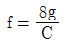
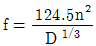
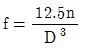
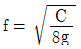
(정답률: 77%)
48. 층류에서 속도 분포는 포물선을 그리게 된다. 이때 전단응력의 분포형태는?
- 포물선
- 쌍곡선
- 직선
- 반원
(정답률: 62%)
49. 부체의 중심을 G, 부심을 C, 경심을 M이라 할 때 불안정한 상태를 표시한 것은?
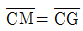
일 때- M이 G보다 위에 있을 때
- M과 C가 연직축 상에 있을 때
- M이 G보다 아래에 있고 C보다 위에 있을 때
(정답률: 70%)
50. 10℃의 물방울 지름이 3mm일 때 내부의 외부의 압력차는? (단, 10℃에서의 표면장력은 0.076g/cm이다.)
- 1.01g/cm2
- 2.02g/cm2
- 3.03g/cm2
- 4.04g/cm2
(정답률: 62%)
51. 도수(Hydraulic jump)현상에 관한 설명으로 옳지 않은 것은?
- 운동량 방정식으로부터 유도할 수 있다.
- 상류에서 사류로 급변할 경우 발생한다.
- 도수로 인한 에너지 손실이 발생한다.
- 파상도수와 완전도수는 Froude 수로 구분한다.
(정답률: 76%)
52. 지하수의 유속공식 V=KI에서 K의 크기와 관계가 없는 것은?
- 물의 점성계수
- 흙의 입경
- 흙의 공극률
- 지하수위
(정답률: 74%)
53. 오리피스에 있어서 에너지 손실은 어떻게 보정할수 있는가?
- 이론유속에 유속계수를 곱한다.
- 실제유속에 유속계수를 곱한다.
- 이론유속에 유량계수를 곱한다.
- 실제유속에 유량계수를 곱한다.
(정답률: 60%)
54. 정상적인 흐름 내의 1개의 유선상의 유체입자에 대하여 그 속도수두 V2/2g, 압력수두 P/ω0, 위치수두 Z에 대하여 동수경사로 옳은 것은?
- V2/2g+P/ω0
- V2/2g+Z+P/ω0
- V2/2g+Z
- P/ω0+Z
(정답률: 75%)
55. 면적이 A인 평판이 수면으로부터 h가 되는 깊이에 수평으로 놓여있을 경우 이 평판에 작용하는 전수압 P는? (단, 물의 단위중량은 w이다.)
- P=whA
- P=wh2A
- P=w2hA
- P=whA2
(정답률: 80%)
56. 단위시간에 있어서 속도변화가 V1에서 V2로 되며 이때 질량 m인 유체의 밀도를 ρ라 할 때 운동량 방정식은? (단, Q : 유량, ω : 유체의 단위중량, g : 중력가속도)
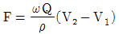
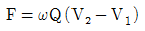
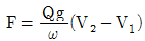
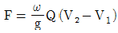
(정답률: 80%)
57. 그림과 같은 두 개의 수조(A1=2m2, A2=4m2)를 한 변의 길이가 10cm인 정사각형 단면(a1)의 Orifice로 연결하여 물을 유출시킬 때 두 수조의 수면이 같아지려면 얼마의 시간이 걸리는가? (단, h1=5m, h2=3m, 유량계수 C=0.62이다.)
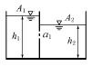
- 130초
- 137초
- 150초
- 157초
(정답률: 56%)
58. 내경 2cm의 관내를 수온 20℃의 물이 25cm/s의 유속을 갖고 흐를 때 이 흐름의 상태는? (단, 20℃일 때 의 물의 동점성계수 ν=0.01cm2/s)
- 층류
- 난류
- 상류
- 불완전 층류
(정답률: 80%)
59. 상류(常流)로 흐르는 수로에 댐을 만들었을 경우 그 상류(上流)에 생기는 수면곡선은?
- 배수곡선
- 저하곡선
- 수리특성곡선
- 홍수추적곡선
(정답률: 78%)
60. 폭 1m인 판을 접어서 직사각형 개수로를 만들었을 때 수리상 유리한 단면의 단면적은?
- 0.111m2
- 0.120m2
- 0.125m2
- 0.135m2
(정답률: 64%)
4과목: 철근콘크리트 및 강구조
61. 강도설계법에서 fck=21MPa, fy=300MPa일 때 다음 그림과 같은 보의 등가직사각형 응력블록의 깊이 a 는? (단, As=2,400mm2이다.)(문제 오류고 그림이 없습니다. 정답은 3번 입니다. 정확한 그림 내용을 아시는분 께서는 관리자 메일로 부탁 드립니다.)
- 264mm
- 248mm
- 144mm
- 127mm
(정답률: 66%)
62. 프리스트레스의 손실원인 중 프리스트레스 도입 후에 시간의 경과에 따라 생기는 것은?
- 콘크리트의 탄성변형
- 정착단의 활동
- 콘크리트의 크리프
- PS강재와 쉬스 사이의 마찰
(정답률: 64%)
63. 강도설계법에서 강도감소계수에 관한 규정 중 틀린 것은?
- 인장지배단면 : 0.85
- 나선철근으로 보강된 철근콘크리트 부재의 압축지배단면 : 0.70
- 전단력 : 0.75
- 콘크리트의 지압력 : 0.70
(정답률: 64%)
64. 강도설계시에 콘크리트가 부담하는 공칭 전단강도 V0는 약 얼마인가? (단, fck=24MPa, 부재의 폭 300mm, 부재의 유효깊이 500mm이며 전단과 휨만을 받는 것으로 한다.)(오류 신고가 접수된 문제입니다. 반드시 정답과 해설을 확인하시기 바랍니다.)
- 100kN
- 110kN
- 118kN
- 122kN
(정답률: 57%)
65. 길이가 3m인 캔틸레버보의 자중을 포함한 계수하중이 100kN/m일 때 위험단면에서 전단철근이 부담해야 할 전단력(Vs)은 약 얼마인가? (단, fck=24MPa, fy=300MPa, bw=300mm, d=500mm)
- 158.2kN
- 193.7kN
- 210.9kN
- 252.8kN
(정답률: 42%)
66. 프리스트레스트 콘크리트의 강도개념을 설명한 것으로 옳은 것은?
- 프리스트레스가 도입되면 콘크리트 부재에 대한 해석이 탄성이론으로 가능하다는 개념
- PSC보를 RC보처럼 생각하여, 콘크리트는 압축력을 받고 긴장재는 인장력을 받게 하여 두 힘의 우력 모멘트로 외력에 의한 휨모멘트에 저항시킨다는 개념
- 프리스트레싱에 의한 작용과 부재에 작용하는 하중을 평형이 되도록 하자는 개념
- 선형탄성이론에 의한 개념이며, 콘크리트와 긴장재의 계산된 응력이 허용응력 이하로 되도록 설계하는 개념
(정답률: 70%)
67. 아래 그림과 같은 맞대기 용접의 용접부에 생기는 인장응력은?
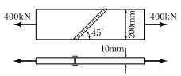
- 180MPa
- 141MPa
- 200MPa
- 223MPa
(정답률: 66%)
68. 아래 그림과 같이 경간 L=9m인 연속 슬래브에서 빗금 친 반T형보의 유효폭(b)은?(오류 신고가 접수된 문제입니다. 반드시 정답과 해설을 확인하시기 바랍니다.)
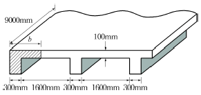
- 900mm
- 1,⑤0mm
- 1,100mm
- 1,200mm
(정답률: 23%)
69. 아래 그림과 같은 복철근 직사각형 단면의 보에서 등가직사각형 응력블록의 깊이(a)는? (단, As=4,765mm2, As' =1,927mm2, fck=28MPa, fy=350MPa이고 파괴시 압축철근이 항복한다고 가정한다.)
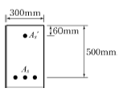
- 127.4mm
- 139.1mm
- 145.7mm
- 152.5mm
(정답률: 75%)
70. 다음 단면의 균열 모멘트 Mcr 의 값은? (단, fck=24MPa, 콘크리트의 파괴계수 fr=3.09MPa)
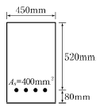
- 16.3kNㆍm
- 41.58kNㆍm
- 83.43kNㆍm
- 110.88kNㆍm
(정답률: 59%)
71. D-25(공칭직경 : 25.4mm)를 사용하는 압축이형철근의 기본정착길이는? (단, fck=27MPa, fy =400MPa이다.)
- 357mm
- 489mm
- 745mm
- 1,174mm
(정답률: 66%)
72. 전단철근으로 사용될 수 있는 것이 아닌 것은?
- 스터럽과 굽힘철근의 조합
- 부재축에 직각인 스터럽
- 부재의 축에 직각으로 배치된 용접철망
- 주안장 철근에 15°의 각도로 구부린 굽힘철근
(정답률: 80%)
73. bw=200mm, a =90mm인 강도설계의 단철근 직사각형 보에서 fck가 21MPa이고 유효깊이(d)가 500mm라면 공칭 휨모멘트강도(Mn)는 얼마인가? (단, 이 보는 균형보이다.)
- 102.3kNㆍm
- 113.5kNㆍm
- 134.7kNㆍm
- 146.2kNㆍm
(정답률: 63%)
74. fck가 38MPa일 때 직사각형 응력분포의 깊이를 나타내는 β1의 값은 얼마인가?
- 0.78
- 0.92
- 0.80
- 0.75
(정답률: 75%)
75. 그림과 같은 단면의 도심에 PS강재가 배치되어 있다. 초기 프리스트레스 힘 1500kN를 작용시켰다. 20%의 손실을 가정하여 콘크리트의 하연응력이 0이 되도록 하려면 이때의 휨모멘트 값은 얼마인가? (단, 자중은 무시함)
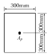
- 120kNㆍm
- 230kNㆍm
- 313kNㆍm
- 431kNㆍm
(정답률: 39%)
76. 강도설계법에 관한 기본가정으로 틀린 것은?
- 압축측 콘크리트의 변형률은 등가깊이 a=β1c 까지 직사각형 분포이다.
- 콘크리트의 압축연단 최대변형률은 0.003으로 한다.
- 콘크리트의 인장강도는 휨계산에서 무시한다.
- 항복강도 fy 이하에서의 철근 응력은 그 변형률의 Es배를 취한다.
(정답률: 36%)
77. 단철근 직사각형 보의 자중이 15kN/m이고 활하중이 23kN/m일 때 계수 휨모멘트는 얼마인가? (단, 이 보는 지간 8m인 단순보이다.)
- 416.2kNㆍm
- 438.4kNㆍm
- 452.4kNㆍm
- 511.2kNㆍm
(정답률: 80%)
78. 옹벽의 안정조건에 대한 설명으로 틀린 것은?
- 활동에 대한 저항력은 옹벽에 작용하는 수평력의 1.5배 이상이어야 한다.
- 지반에 유발되는 최대 지반반력이 지반의 허용지지력의 1.5배 이상이어야 한다.
- 전도 및 지반지지력에 대한 안정조건은 만족하지만 활동에 대한 안정조건만을 만족하지 못할 경우에는 활동방지벽 혹은 횡방향 앵커 등을 설치하여 활동저항력을 증대시킬 수 있다.
- 전도에 대한 저항휨모멘트는 횡토압에 의한 전도휨모멘트의 2.0배 이상이어야 한다.
(정답률: 46%)
79. 인장부재의 볼트 연결부를 설계할 때 고려되지 않는 항목은?
- 지압응력
- 볼트의 전단응력
- 부재의 항복응력
- 부재의 좌굴응력
(정답률: 66%)
80. 철근의 피복 두께에 대한 설명으로 틀린 것은?
- 주철근의 표면에서 콘크리트의 표면까지의 최단거리이다.
- 부착응력을 확보한다.
- 침식이나 염해 또는 화학작용으로부터 철근을 보호한다.
- 철근이 산화되지 않도록 한다.
(정답률: 60%)
5과목: 토질 및 기초
81. 어떤 흙의 전단시험결과 c=1.8kg/cm2, φ=35°, 토립자에 작용하는 수직응력 σ＝3.6kg/cm2일 때 전단강도는?
- 4.89kg/cm2
- 4.32kg/cm2
- 6.33kg/cm2
- 3.86kg/cm2
(정답률: 76%)
82. 입도시험결과 균등계수가 6이고, 입자가 둥근 모래흙의 강도시험 결과 내부마찰각이 32°이었다. 이 모래지반의 N치는 대략 얼마나 되겠는가? (단, Dunham의식사용)
- 12
- 18
- 24
- 30
(정답률: 50%)
83. 영공극간극곡선(zero air void curve)은 다음 중 어떤 토질시험 결과로 얻어지는가?
- 액성한계 시험
- 다짐 시험
- 직접전단 시험
- 압밀 시험
(정답률: 60%)
84. 말뚝의 직경이 50cm, 지중에 관입된 말뚝의 길이가 10m인 경우 무리말뚝의 영향을 고려하지 않아도 되는 말뚝의 최소간격은?
- 2.37m
- 2.75m
- 3.35m
- 3.75m
(정답률: 38%)
85. 압밀계수를 구하는 목적은?
- 압밀침하량을 구하기 위하여
- 압축지수를 구하기 위하여
- 선행압밀하중을 구하기 위하여
- 압밀침하속도를 구하기 위하여
(정답률: 44%)
86. 도로의 평판재하 시험이 끝나는 조건에 대한 설명으로 옳지 않은 것은?
- 침하량이 15mm에 달할 때
- 하중강도가 현장에서 예상되는 최대접지압력을 초과할 때
- 하중강도가 그 지반의 항복점을 넘을 때
- 흙의 함수비가 소성한계에 달할 때
(정답률: 66%)
87. 모래 치환법에 의한 현장 흙의 단위무게 실험결과가 아래와 같다. 현장 흙의 건조단위중량은?
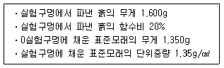
- 0.93g/cm3
- 1.13g/cm3
- 1.33g/cm3
- 1.53g/cm3
(정답률: 70%)
88. 연약점토지반에서(내부마찰각이 0°임)의 단위중량이 1.6t/m3, 점착력이 2t/m2이다. 이 지반을 연직으로 2m 굴착하였을 때 연직사면의 안전율은?
- 1.5
- 2.0
- 2.5
- 3.0
(정답률: 61%)
89. 사질토 지반에서 직경 30cm의 평판재하 시험결과 30t/m2의 압력이 작용할 때 침하량이 5mm라면, 직경 1.5m의 실제 기초에 30t/m2의 하중이 작용할 때 침하량의 크기는?
- 28mm
- 50mm
- 14mm
- 25mm
(정답률: 38%)
90. 정규압밀점토에 대하여 구속응력 2kg/cm2로 압밀배수 삼축압축시험을 실시한 결과 파괴시 축차응력이 4kg/cm2이었다. 이 흙의 내부마찰각은?
- 20°
- 25°
- 30°
- 45°
(정답률: 48%)
91. 부피 100cm3의 시료가 있다. 젖은 흙의 무게가 180g인데 노건조 후 무게를 측정하니 140g이었다. 이 흙의 간극비는? (단, 이 흙의 비중은 2.65이다.)
- 1.472
- 0.893
- 0.627
- 0.470
(정답률: 50%)
92. 그림과 같은 흙댐의 유선망을 작도하는데 있어서 경계조건으로 틀린 것은?
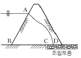
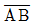
등수두선이다.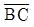
는 유선이다.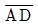
는 유선이다.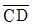
는 침윤선이다.
(정답률: 66%)
93. 어느 흙의 자연함수비가 그 흙의 액성한계보다 높다면 그 흙은 어떤 상태인가?
- 소성상태에 있다.
- 액체상태에 있다.
- 반고체상태에 있다.
- 고체상태에 있다.
(정답률: 82%)
94. 흙의 동해(凍害)에 관한 다음 설명 중 옳지 않은 것은?
- 동상현상은 빙층(ice lens)의 생장이 주된 원인이다.
- 사질토는 모관상승높이가 작아서 동상이 잘 일어나지 않는다.
- 실트는 모관상승높이가 작아서 동상이 잘 일어나지 않는다.
- 점토는 모관상승높이는 크지만 동상이 잘 일어나는편은 아니다.
(정답률: 71%)
95. 다음 그림에 보인 바와 같이 지하수위면은 지표면 아래 2.0m의 깊이에 있고 흙의 단위중량은 지하수위면 위에서 1.9t/m3, 지하수위면 아래에서 2.0t/m3이다. 요소 A가 받는 연직유효응력은?
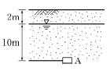
- 19.8t/m2
- 19.0t/m2
- 13.8t/m2
- 13.0t/m2
(정답률: 71%)
96. 다음 중 지지력이 약한 지반에서 가장 적합한 기초 형식은?
- 복합확대기초
- 독립확대기초
- 연속확대기초
- 전면기초
(정답률: 76%)
97. 그림에서 모래층에 분사현상이 발생되는 경우는 수두가 몇 cm 이상일 때 일어나는가?(단, Gs=2.68, n=60%)
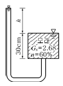
- 20.16cm
- 10.52cm
- 13.73cm
- 18.⑤cm
(정답률: 69%)
98. 그림에서 주동토압의 크기를 구한 값은? (단 흙의 단위중량은 1.8t/m3이고 내부마찰각은 30°이다.)
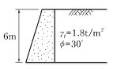
- 5.6t/m
- 10.8t/m
- 15.8t/m
- 23.6t/m
(정답률: 79%)
99. 점성토 지반에 있어서 강성기초의 접지압 분포에 관한 다음 설명 중 옳은 것은?
- 기초의 모서리 부분에서 최대응력이 발생한다.
- 기초의 중앙부에서 최대응력이 발생한다.
- 기초의 밑면 부분에서는 어느 부분이나 동일하다.
- 기초의 모서리 및 중앙부에서 최대응력이 발생한다.
(정답률: 76%)
100. 2면 직접전단실험에서 전단력이 30kg, 시료의 단면적이 10cm2일 때의 전단응력은?
- 1.5kg/cm2
- 3kg/cm2
- 6kg/cm2
- 7.5kg/cm2
(정답률: 44%)
6과목: 상하수도공학
101. 탁도가 30mg/L인 원수를 Alum(Al2(SO4)3∙18H2O) 25mg/L를 주입하여 응집처리할 때 1,000m3/day 처리에 대한 Alum 주입량은?
- 25kg/day
- 30kg/day
- 35kg/day
- 55kg/day
(정답률: 67%)
102. 합류식 관거에서의 계획하수량으로 옳은 것은?
- 계획시간 최대오수량
- 계획오수량
- 계획평균오수량
- 계획시간 최대오수량+계획우수량
(정답률: 73%)
103. 유입하수량 30,000m3/day, 유입 BOD 200mg/L, 유입 SS 150mg/L이고, BOD제거율이 95%, SS 제거율이 90%일 경우 유출 BOD와 유출 SS의 농도는 각각 얼마인가?
- 10mg/L, 15mg/L
- 10mg/L, 30mg/L
- 16mg/L, 15mg/L
- 16mg/L, 30mg/L
(정답률: 69%)
104. 그림에서 간선하수거 DA의 길이는 600m이고 유역내 가장 먼 지점 E에서 간선하수거의 입구 D까지 우수가 유하하는데 걸리는 시간은 5분이다. 간선하수거 내유속이 1m/s라면 유달시간은?
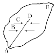
- 5분
- 11분
- 15분
- 20분
(정답률: 79%)
1⑤. 하수도 기본계획 수립시의 조사사항으로 가장 거리가 먼 것은?
- 계획인구 및 포화인구밀도
- 배수지의 크기 및 계통
- 하수배제방식
- 오수량
(정답률: 55%)
106. 하천을 수원으로 하는 경우에 하천에 직접 설치할 수 있는 취수시설과 가장 거리가 먼 것은?
- 취수탑
- 취수틀
- 집수매거
- 취수문
(정답률: 83%)
107. 상수도 배수시설에 대한 설명으로 옳은 것은?
- 계획배수량은 해당 배수구역의 계획 1일 최대급수량을 의미한다.
- 소규모의 수도 및 배수량이 적은 지역에서는 소화용수량은 무시한다.
- 배수지에서의 배수는 펌프가압식을 원칙으로 한다.
- 대용량 배수지 설치보다 다수의 배수지를 분산시키는 편이 안정급수 관점에서 효과적이다.
(정답률: 56%)
108. 하수관거의 각종 단면형상에 대한 설명 중 옳지 않은 것은?
- 원형 하수관거는 수리학적으로 유리하며 내경 3m 정도까지 공장제품을 사용할 수 있어 공사기간이 단축된다.
- 직사각형 단면의 관거는 구조계산이 복잡하고 공사 기간이 길어진다.
- 말굽형 단면은 수리학적으로 유리한 것이 장점이나 시공성이 열악한 것이 단점이다.
- 계란형 단면은 수직방향의 시공에 정확도가 요구되므로 면밀한 시공이 필요하다.
(정답률: 62%)
109. 급속여과지의 여과면적, 지수 및 형상에 대한 설명으로 옳지 않은 것은?
- 여과면적은 계획정수량을 여과속도로 나누어 구한다.
- 1지의 여과면적은 150m2 이하로 한다.
- 지수는 예비지를 포함하여 2지 이상으로 한다.
- 형상은 원형을 표준으로 한다.
(정답률: 58%)
110. 정수시설의 계획정수량을 결정하는 기준이 되는 것은?
- 계획 시간 최대급수량
- 계획 1일 최대급수량
- 계획 시간 평균급수량
- 계획 1일 평균급수량
(정답률: 80%)
111. MLSS 2,000mg/L의 포기조 혼합액을 매스실린더에 1L를 정확히 취한 뒤 30분간 정치하였다. 이때 계면위치가 320mL를 가리켰다면 이 슬러지의 SVI는?
- 160mL/g
- 260mL/g
- 440mL/g
- 640mL/g
(정답률: 53%)
112. 정수시설에서 배출수 처리단계 중 가장 첫째 단계에 속하는 것은?
- 처분단계
- 농축단계
- 조정단계
- 탈수단계
(정답률: 67%)
113. 상수도에서 관수로의 관경설계시 일반적으로 가장 많이 사용되는 공식은?
- Horton 공식
- Manning 공식
- Kutter 공식
- Hazen-Williams 공식
(정답률: 63%)
114. 관경 500mm인 하수관거를 직선부에 설치하고자 한다. 맨홀(manhole) 최대간격은?
- 50m
- 75m
- 100m
- 150m
(정답률: 56%)
115. 취수장에서부터 가정에 이르는 상수도계통을 옳게 나열한 것은?
- 취수시설 - 정수시설 - 도수시설 - 송수시설 - 배수시설 - 급수시설
- 취수시설 - 도수시설 - 송수시설 - 정수시설 - 배수시설 - 급수시설
- 취수시설 - 도수시설 - 정수시설 - 송수시설 - 배수시설 - 급수시설
- 취수시설 - 도수시설 - 송수시설 - 배수시설 - 정수시설 - 급수시설
(정답률: 75%)
116. 관거접합방법 중 다른 방법에 비해 흐름은 원활하나 하류의 굴착 깊이가 커지는 방법은?
- 관정 접합
- 수면 접합
- 관중심 접합
- 관저 접합
(정답률: 72%)
117. 상수도에서 맛, 냄새의 주된 원인에 해당되는 것은?
- pH
- 온도
- 용존산소
- 조류(Algae)
(정답률: 55%)
118. 활성슬러지변법 중 생물반응조의 체류시간(HRT)이 일반적으로 가장 긴 것은?
- 산화구법
- 장기 포기법
- 계단식 포기법
- 순환식 질산화 탈질법
(정답률: 49%)
119. 상수도의 펌프장에서 펌프를 병렬로 연결시켜 사용하여야 하는 경우는?
- 양정이 낮은 경우
- 양정이 대단히 큰 경우
- 양수량의 변화가 작고 양정의 변화가 큰 경우
- 양수량의 변화가 크고 양정의 변화가 작은 경우
(정답률: 50%)
120. 가정하수, 공장폐수 및 우수를 혼합해서 수송하는 하수관거는?
- 가정 하수관거(sanitary sewer)
- 우수관거(storm sewer)
- 합류식 하수관거(combined sewer)
- 분류식 하수관거(separate sewer)
(정답률: 66%)